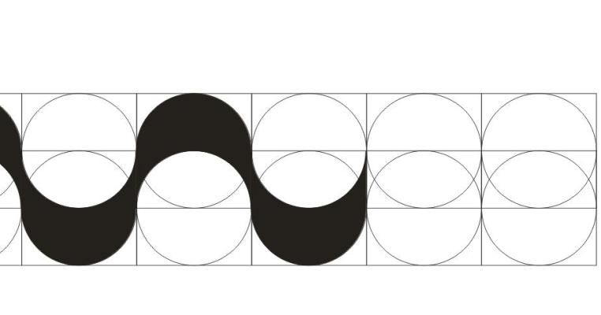
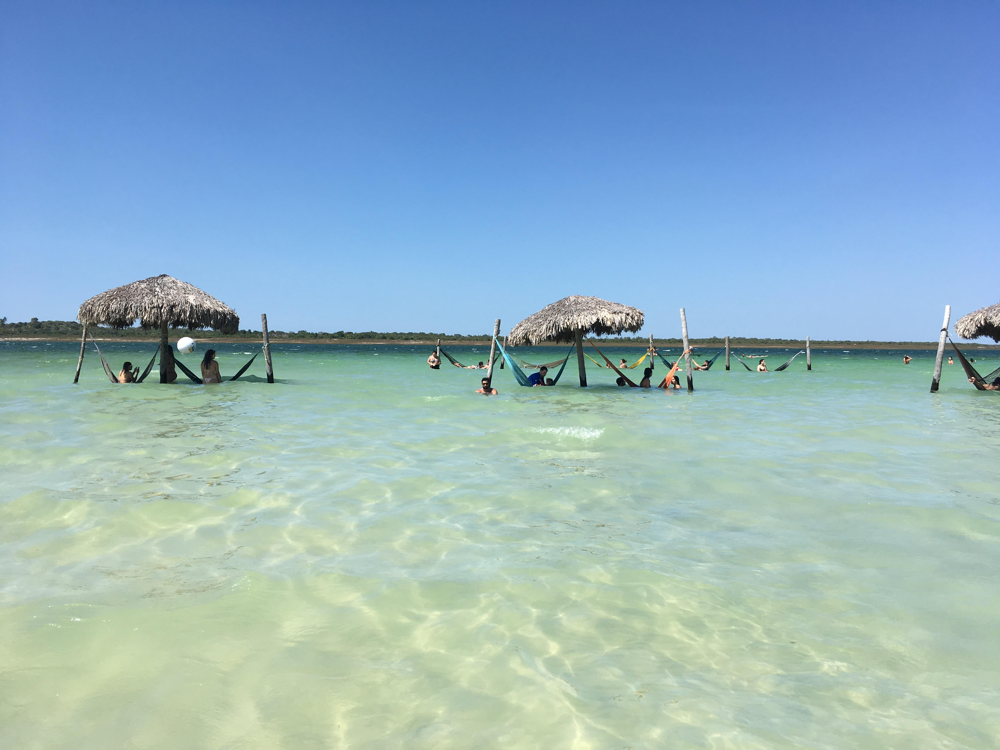
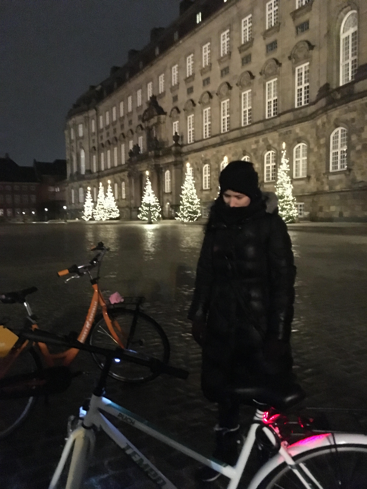
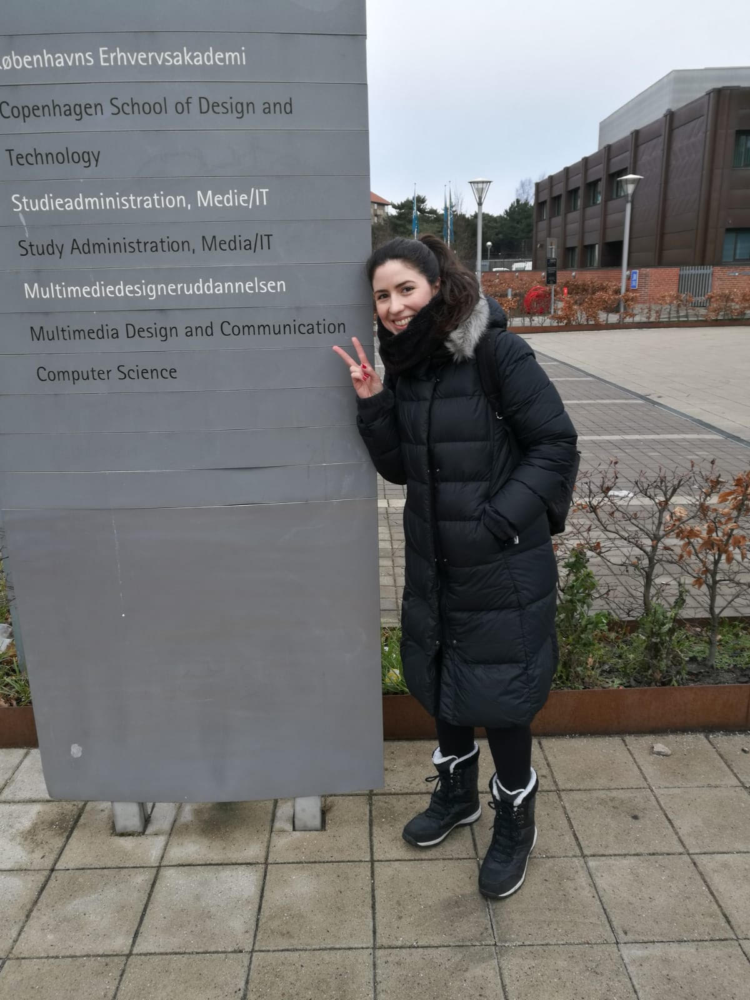

Roberto Burle Marx, brazilian designer, found in waves the inspiration to design the iconic sidewalks from Rio de Janeiro.
The image for this website was carefully selected for my first student portfolio bacause it represents my thoughts on process creation. I believe that our personal experiences, good and bad, are valuable and when combined form the way we see the world. Furthermore it is with these same eyes that we develop creativity, sensibility and other emotions that we often turn back to in design creation.
Inspiration comes in different forms and a great design can be as simple as a wave.
Inspiration comes in different forms and a great design can be as simple as a wave.
I am a brazilian living in Copenhagen for 2 years now. This is my first time living abroad and I am loving the journey. I went through Law School in Brazil and, althout the law bachelor, I have always worked with IT Support. What started as a need became a passion, and I have proudly more than 6 years experience in the area. I can perform basic troubleshooting, some second level support, manually install software, debug, but this is my first contact with actual coding. One semester passed and so much changed at work because of all this knowledge I have acquired so far.Thank you!
Could not be more satisfied with MMD, it feels good to finally know I am definetely on the right path.
You may check my CV HERE



